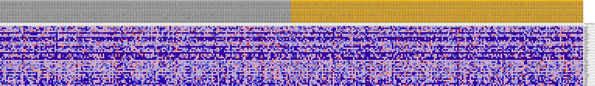
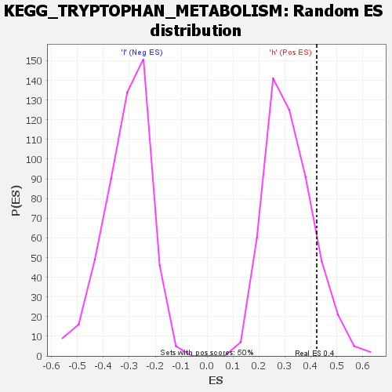

| | | Dataset | VCAN.VCAN.cls#h_versus_l.VCAN.cls#h_versus_l_repos |
| Phenotype | VCAN.cls#h_versus_l_repos |
| Upregulated in class | h |
| GeneSet | KEGG_TRYPTOPHAN_METABOLISM |
| Enrichment Score (ES) | 0.4226359 |
| Normalized Enrichment Score (NES) | 1.3308351 |
| Nominal p-value | 0.128 |
| FDR q-value | 1.0 |
| FWER p-Value | 0.934 |
Table: GSEA Results Summary
 Fig 1: Enrichment plot: KEGG_TRYPTOPHAN_METABOLISM
Fig 1: Enrichment plot: KEGG_TRYPTOPHAN_METABOLISM
Profile of the Running ES Score & Positions of GeneSet Members on the Rank Ordered List
| SYMBOL | TITLE | RANK IN GENE LIST | RANK METRIC SCORE | RUNNING ES | CORE ENRICHMENT | | 1 | WARS2 | na | 620 | 0.107 | 0.0473 | Yes |
| 2 | ASMT | na | 765 | 0.103 | 0.1011 | Yes |
| 3 | HAAO | na | 1118 | 0.095 | 0.1466 | Yes |
| 4 | HADH | na | 1128 | 0.095 | 0.1983 | Yes |
| 5 | TPH2 | na | 1287 | 0.091 | 0.2454 | Yes |
| 6 | ALDH1B1 | na | 1980 | 0.082 | 0.2775 | Yes |
| 7 | GCDH | na | 3149 | 0.070 | 0.2948 | Yes |
| 8 | CYP1A2 | na | 3832 | 0.065 | 0.3180 | Yes |
| 9 | OGDHL | na | 3951 | 0.064 | 0.3508 | Yes |
| 10 | TPH1 | na | 4156 | 0.062 | 0.3812 | Yes |
| 11 | ALDH7A1 | na | 7417 | 0.043 | 0.3458 | Yes |
| 12 | OGDH | na | 7714 | 0.042 | 0.3632 | Yes |
| 13 | CAT | na | 7746 | 0.042 | 0.3853 | Yes |
| 14 | ACMSD | na | 8667 | 0.037 | 0.3889 | Yes |
| 15 | TDO2 | na | 8675 | 0.037 | 0.4089 | Yes |
| 16 | ALDH3A2 | na | 8991 | 0.035 | 0.4226 | Yes |
| 17 | ACAT1 | na | 10496 | 0.029 | 0.4111 | No |
| 18 | CYP1A1 | na | 11867 | 0.023 | 0.3989 | No |
| 19 | IDO1 | na | 12282 | 0.021 | 0.4031 | No |
| 20 | IL4I1 | na | 16524 | 0.007 | 0.3298 | No |
| 21 | AOC1 | na | 16659 | 0.006 | 0.3307 | No |
| 22 | DDC | na | 17862 | 0.003 | 0.3104 | No |
| 23 | HADHA | na | 20837 | -0.000 | 0.2566 | No |
| 24 | ALDH2 | na | 23667 | -0.007 | 0.2094 | No |
| 25 | ACAT2 | na | 23701 | -0.007 | 0.2128 | No |
| 26 | EHHADH | na | 23811 | -0.008 | 0.2150 | No |
| 27 | KMO | na | 24287 | -0.009 | 0.2113 | No |
| 28 | AFMID | na | 24952 | -0.011 | 0.2052 | No |
| 29 | MAOB | na | 31318 | -0.028 | 0.1054 | No |
| 30 | ECHS1 | na | 31691 | -0.029 | 0.1147 | No |
| 31 | AOX1 | na | 31908 | -0.030 | 0.1271 | No |
| 32 | ALDH9A1 | na | 32604 | -0.032 | 0.1320 | No |
| 33 | CYP1B1 | na | 35696 | -0.040 | 0.0980 | No |
| 34 | AADAT | na | 41476 | -0.056 | 0.0238 | No |
| 35 | INMT | na | 43366 | -0.061 | 0.0230 | No |
| 36 | AANAT | na | 48820 | -0.079 | -0.0328 | No |
| 37 | IDO2 | na | 48905 | -0.079 | 0.0089 | No |
| 38 | KYNU | na | 52365 | -0.097 | -0.0009 | No |
| 39 | MAOA | na | 52500 | -0.098 | 0.0501 | No |
Table: GSEA details [plain text format]

Fig 2: KEGG_TRYPTOPHAN_METABOLISM
Blue-Pink O' Gram in the Space of the Analyzed GeneSet

Fig 3: KEGG_TRYPTOPHAN_METABOLISM: Random ES distribution
Gene set null distribution of ES for KEGG_TRYPTOPHAN_METABOLISM